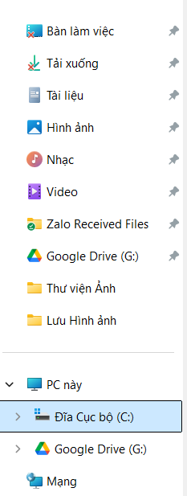
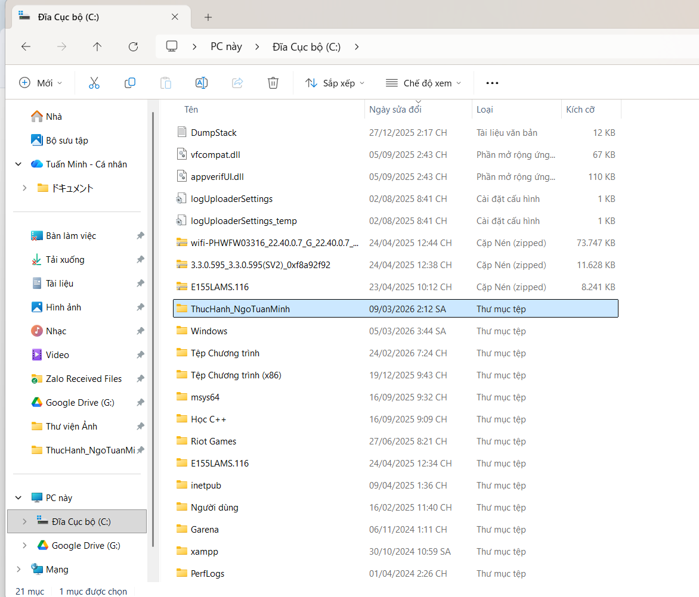
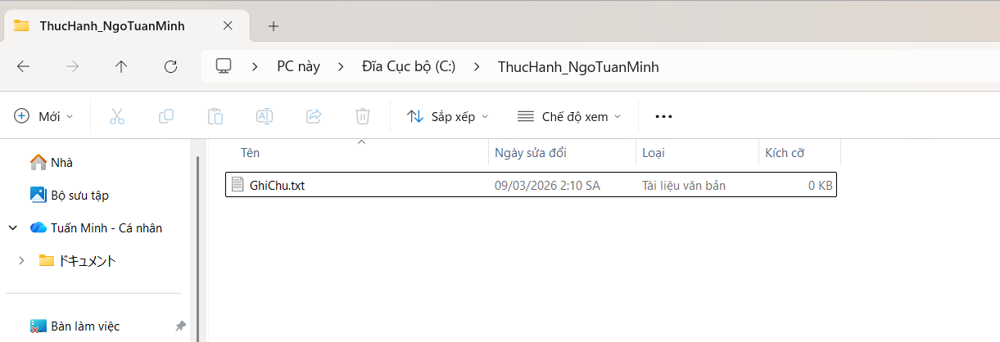
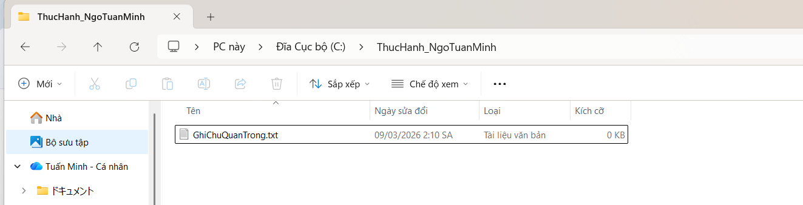
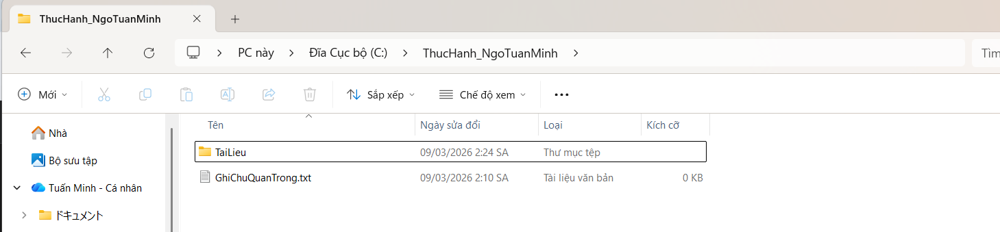
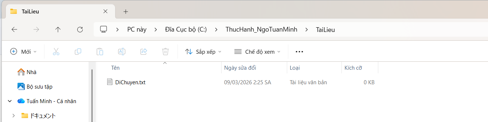
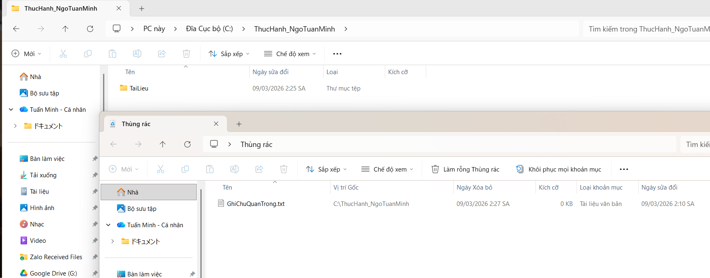
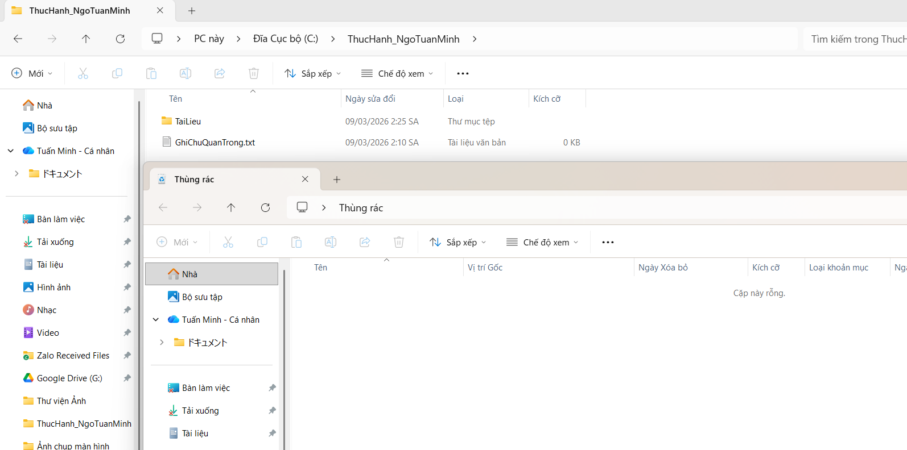

Các thao tác với File Explorer trên Windows
Nhấn tổ hợp Ctrl + E hoặc bấm vào biểu tượng File Explorer ở thanh tác vụ.
Ở thanh bên trái, dưới mục This PC, chọn ổ đĩa bất kì (ví dụ: ổ E) ngoại trừ ổ C.

Bấm tổ hợp phím Ctrl + Shift + N hoặc bấm New -> Folder hoặc nhấp chuột phải vào một khoảng trống -> chọn New -> Folder.
Đặt tên cho thư mục là ThucHanh_NgoTuanMinh và nhấn Enter để hoàn tất.

Nhấn đúp vào thư mục ThucHanh_NgoTuanMinh vừa tạo.
Bấm New -> Text Document hoặc nhấp chuột phải vào khoảng trống -> chọn New -> Text Document.
Đặt tên cho tệp là GhiChu(.txt) rồi bấm Enter.

Nhấn chuột trái 1 lần để chọn tệp GhiChu.txt -> nhấn chuột phải -> chọn Rename.
Đổi tên thành GhiChuQuanTrong.txt và nhấn Enter để hoàn tất.

Trong thư mục ThucHanh_NgoTuanMinh, nhấn chuột phải -> New -> Folder (hoặc bấm Ctrl + Shift + N).
Đặt tên là TaiLieu và bấm Enter.

Nhấn chuột phải 1 lần vào GhiChuQuanTrong.txt để chọn tệp -> nhấn chuột trái vào Copy (hoặc bấm Ctrl + C).
Nhấp đúp vào thư mục TaiLieu, nhấp chuột phải vào khoảng trống -> chọn Paste (hoặc nhấn Ctrl + V) để dán tệp.
Quay lại thư mục gốc (ThucHanh_NguyenVanA hoặc ThucHanh_NgoTuanMinh tùy yêu cầu), tạo một tệp mới tên là DiChuyen.txt.
Nhấn chuột phải vào tệp DiChuyen.txt -> chọn Cut (hoặc Ctrl + X).
Nhấp đúp vào thư mục TaiLieu, nhấp chuột phải vào khoảng trống -> chọn Paste (hoặc nhấn Ctrl + V). Tệp gốc sẽ biến mất và chỉ còn ở vị trí mới.

Trong thư mục TaiLieu, nhấp chuột phải vào tệp GhiChuQuanTrong.txt -> chọn Delete trên bàn phím (hoặc biểu tượng thùng rác). Tệp sẽ được chuyển vào Thùng rác (Recycle Bin).

DiChuyen.txt, nhấn giữ phím Shift và nhấn phím Delete. Một cảnh báo sẽ hiện ra. Nếu đồng ý, tệp sẽ bị xóa vĩnh viễn mà không qua Thùng rác.

Trong Recycle Bin, nhấn chuột phải vào tệp GhiChuQuanTrong.txt muốn khôi phục rồi chọn khôi phục (Restore).
Tệp được khôi phục sẽ trở về nơi mà chúng ở trước khi bị xóa.